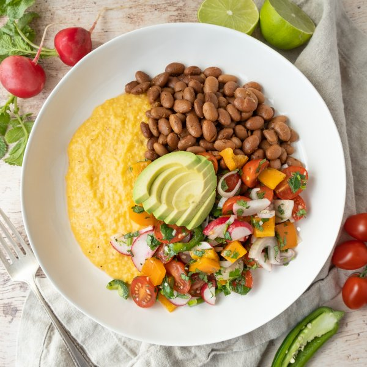

Cheesy Polenta Bowl with Pinto Beans, Pico de Gallo Salad & Avocado

Total Time
40 min
Nutrition (Per Serving)
686 kcalCalories
30 gProtein
83.5 gCarbs
28.5 gFat
Full nutrition table
| Calories | 686 kcal |
| Total fat | 28.5 g |
| Saturated fat | 8.6 g |
| Trans fat | 0.4 g |
| Cholesterol | 28.9 mg |
| Sodium | 614.3 mg |
| Carbohydrates | 83.5 g |
| Fiber | 15.7 g |
| Sugars | 8.5 g |
| Protein | 30 g |
| Potassium | 1495.1 mg |
| Calcium | 346.7 mg |
| Iron | 6.2 mg |
| Vitamin A | 1149.3 IU |
| Vitamin C | 92.3 mg |
| Vitamin D | 6.8 IU |
Cookware
Ingredients
- 1avocado
- ½ (8 oz) blockcheddar cheese
- 48 fl ozchicken or vegetable broth
- 1 small bunchcilantro
- 2 clovesgarlic
- 1 pintgrape tomatoes
- 1jalapeño pepper
- 1lime
- 1orange bell pepper
- 2 (15 oz) canspinto beans
- 1 ½ cupspolenta (cornmeal)
- 1 bunchradish
- 2shallots
- black pepper
- cumin, ground
- extra virgin olive oil
- paprika
- salt
Steps
- In a medium saucepan, bring broth to a boil. Reduce heat to low and gradually add polenta in a thin steady stream, while whisking, until the polenta is incorporated into the broth. Cover and cook, stirring occasionally, until polenta is soft and the texture is creamy, 15-25 minutes.48 fl oz (6 cups) chicken or vegetable broth
1 ½ cups polenta (cornmeal) - Meanwhile, wash and dry the fresh produce.1 lime
1 jalapeño pepper
1 orange bell pepper
1 pint grape tomatoes
1 bunch radish
1 small bunch cilantro
1 avocado - Juice lime into a medium bowl. Add oil, salt, and pepper; whisk to combine the dressing.4 tsp extra virgin olive oil
½ tsp salt
¼ tsp black pepper - Peel and mince garlic. Peel, halve, and thinly slice shallots into half-moons; add both to the bowl with the dressing.2 cloves garlic
2 shallots - Halve jalapeño pepper lengthwise; seed and remove ribs with a spoon. Slice crosswise into thin half-moons; add to the bowl. (Be careful, with jalapeños, do not touch your eyes and ensure you wash your hands after handling or wear gloves while preparing.)
- Trim, seed, and medium dice bell pepper; add to the bowl.
- Halve tomatoes and add to the bowl. Trim, halve, and slice radishes into thin half-moons. Add both to the bowl.
- Shave cilantro leaves off the stems; discard stems and mince the leaves. Add to the bowl and stir to combine the salad; set aside.
- Preheat a skillet over medium heat.
- While the skillet heats up, drain and rinse beans in a colander.2 (15 oz) cans pinto beans
- Once the skillet is hot, add oil and swirl to coat the bottom. Add beans and spices to the skillet; cook, stirring occasionally, until beans are warmed through, 2-3 minutes. Cover and remove from heat.2 tsp extra virgin olive oil
½ tsp cumin, ground
½ tsp paprika
¼ tsp salt
¼ tsp black pepper - While the beans are cooking, coarsely grate the cheese.½ (8 oz) block cheddar cheese
- Add cheese, salt, and pepper to the polenta and stir to combine; if the polenta is too firm, add hot water, 1 tablespoon at a time, until you reach a desired consistency. Cover and remove from heat.½ tsp salt
½ tsp black pepper - Halve and pit the avocado. Slice thinly while still in skin, then scoop out with a spoon.
- To serve, divide polenta, beans, and salad between bowls. Top with avocado and enjoy!